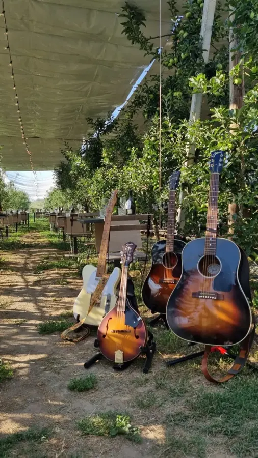

Una band bresciana dall’anima internazionale, pronta a regalarti eventi country indimenticabili.
 Jolene · Dolly Parton
Jolene · Dolly Parton
Che tu voglia ascoltare un buon concerto, rilassarti con ballad romantiche davanti a un cocktail o scatenarti sui tavoli con le party song più ritmate, la colonna sonora della tua serata la costruiamo su misura.
Tra inediti e cover dei giganti di Nashville — Zach Top, Chris Stapleton, Brad Paisley, The Zac Brown Band, The Kruse Brothers, Blake Shelton — portiamo in scena l’autentico spirito americano: sonorità rustiche, solide basi ritmiche, intrecci di strumenti a corda e ricche armonie vocali. Il tutto condito dall’inconfondibile carattere coffee-killer.
La nostra scaletta dura circa 2 ore, suddivisa in 1 o 2 set. Se devi coprire una giornata intera faccelo sapere, così possiamo organizzarci per non lasciare scoperto nemmeno un momento: gestiamo l’aggiunta di un set acustico, o teniamo alte le country vibes con delle playlist a tema quando non siamo sul palco.
Montaggio, cablaggio, gestione dei suoni e delle luci: lo facciamo noi. Fino a 250/300 persone siamo autonomi; sopra chiamiamo il nostro service di fiducia. Ne hai già uno a disposizione? Faccelo sapere nelle note, per poterci organizzare al meglio!
Abbiamo bisogno di uno spazio minimo di circa 4 × 3 metri e di una presa della corrente abbastanza vicina. Al resto pensiamo noi: arriviamo col furgone qualche ora prima per montare tutto. Facci sapere se ci sono difficoltà a raggiungere il palco con i mezzi.
È fissa: il nostro show è un concerto di circa 25 brani. Per situazioni particolari, da concordare, prepariamo brani su richiesta.
Ci adattiamo alle vostre opzioni: per il pasto della band ci basiamo su quello che vi è più comodo, prima o dopo lo show. E se la serata richiede una trasferta lunga, valutiamo insieme le varie opzioni per un alloggio. Ah… e se a fine concerto scappa una birra in compagnia, brindiamo volentieri!
Siamo di Brescia, ma anche se sei di Canicattì veniamo a farti ballare. Nel 2026 ci hanno chiamati da sette regioni. Il rimborso del viaggio è una voce a parte del preventivo, scritta prima.
Come per qualsiasi evento, restano in capo a chi organizza. Noi ti inviamo l’elenco dei brani, che è quello di cui hai bisogno per compilare il borderò.
 e tanti altri
e tanti altri
La nostra line-up

Chitarre e voce
Ma l’hamburger c’è anche vegetale?

Batteria e voci
Potevamo fare di meglio.

Piano e armonica
Raga questo è troppo country!

Basso e contrabbasso
Birretta?

Chitarre e lap steel
Ti serve «qualunque cosa»? Ce l’ho.
Dai prati e dalle vigne di pomeriggio ai palchi di sera.




Due minuti. Lo legge Mike, non un robot, e ti rispondiamo con una proposta in qualche giorno.